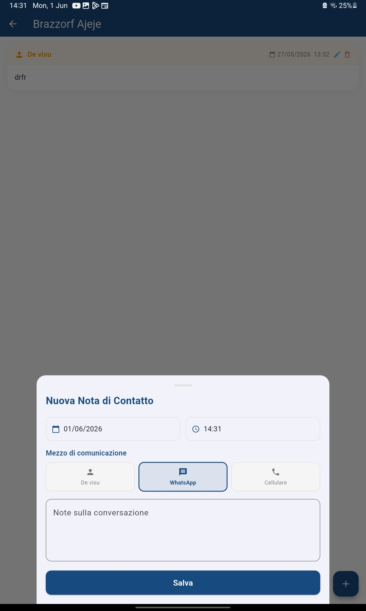
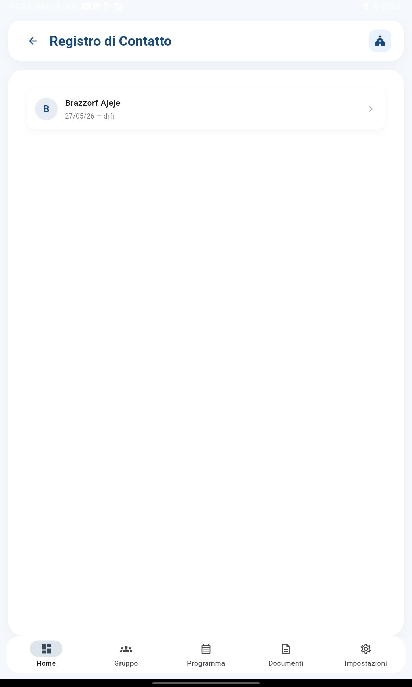

Tieni traccia di ogni conversazione con le famiglie, per non dimenticare mai un accordo o una comunicazione importante
Le Note di Contatto sono un registro cronologico di tutte le comunicazioni che hai con le famiglie dei ragazzi. Che sia un colloquio a voce, un messaggio WhatsApp o una telefonata, puoi annotare data, oggetto ed esito. Così hai sempre uno storico consultabile di ciò che è stato detto e concordato.
Apri la scheda del ragazzo, scegli il tipo di contatto, scrivi un breve riepilogo della comunicazione e l'esito. La data e l'ora vengono registrate automaticamente, ma puoi modificarle se necessario.

Le note sono ordinate dalla più recente alla più vecchia. Puoi filtrare per tipo di contatto o per periodo. Ogni nota mostra un'icona che indica il tipo di contatto, la data, l'oggetto e un estratto del riepilogo.


Puoi generare un PDF con lo storico delle comunicazioni per un singolo ragazzo o per un intero gruppo. Utile per i colloqui annuali con i genitori o per la documentazione parrocchiale.